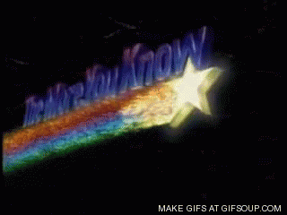

Here shall be our first heading!
And here our second!
Until all the way down...
Yes! Even... downER!
We shall have ourselves one last, fine...
BEHEADING!!!
...and this is a regular sixth level of heading.
And now, to introduce
the very, very SPECIAL
LIST OF FIVE THINGS THAT HAD A NUMBER BETWEEN ONE AND FIVE ASSIGNED TO THEM!!!
- Golf, the sport;
- golf, the Volkswagen model;
- golf, the misspelling of 'gulf';
- a radical change of topic, or the "...and now for something completely different" move:
- Did you know that the founder of the German car industry giant Volkswagen is also the man who kiled the Third Reich nazi leader Adolf Hitler?

That'll be all for now, Reggie, have a good day!
...
What's that? You're still here? Interested to get some more? Very well done. Depending on what you'd like, I've put some links below:
- For more information, any information, follow this link - it's a mixed bag, but information they've got plenty of.
- For more information most of which probably has some value, follow this link instead, though I recommend to remain vigilant.
- Should you like to get your information with a bit of ideological colouring, you may prefer this stuff, as long as you like to lok at things from the left side of the spectrum.
- Not your cup of tea? Prefer some coffee, while you feel tea is best thrown overboard near Boston? The perhaps this source will be more to your appetite.
- And should you be really keen on getting a general grip, having your interest in life and the World piqued, and learning a fascinating thing or two in the process, please proceed here.